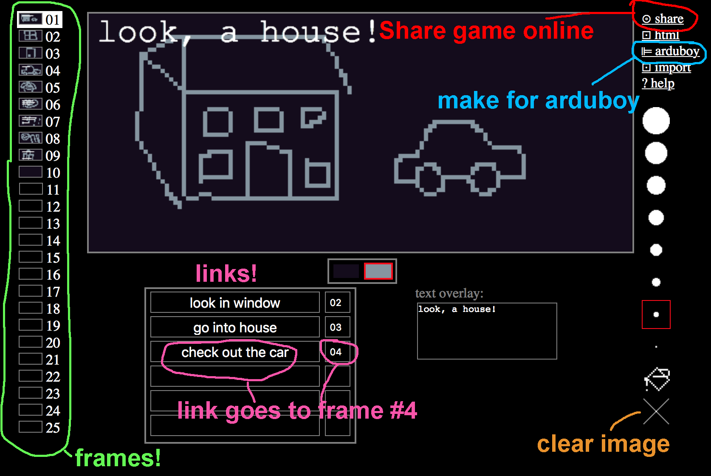

What is Flickuboy
Flickugame's a dialect of flickgame that can be used to make + share games for both online and the arduboy.
How to make a game

Keyboard shortcut: you can press + or - to change the brush size.
How to get my game on an arduboy
- Set up the Arduino environment as described here: http://community.arduboy.com/t/arduboy-quick-start-guide/725
- Click on the ⊫arduboy link in the editor, save it to a .ino file, open it in the Arduino IDE, and build+run :D
source code
github
Flickugame uses code from the unofficial arduboy2 library. So thanks to those people!
credits
made by increpare [ support my work on patreon ]